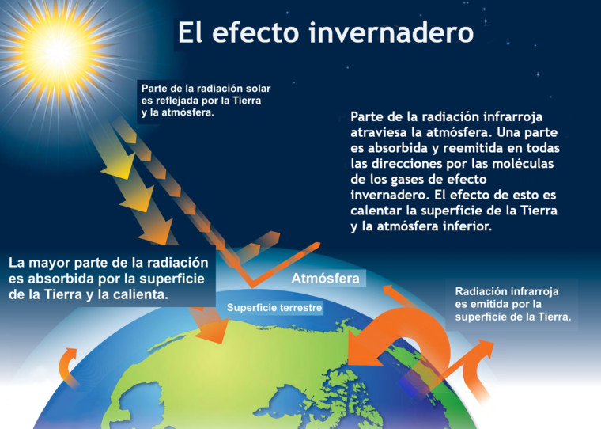
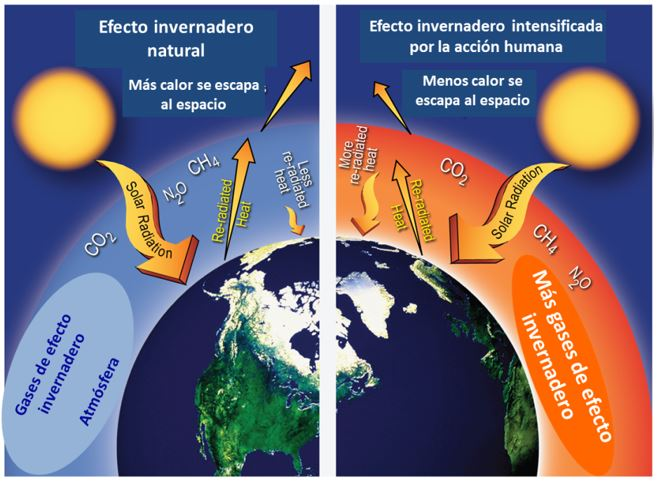
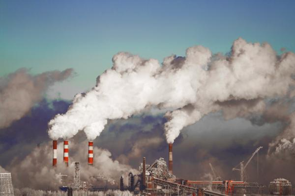
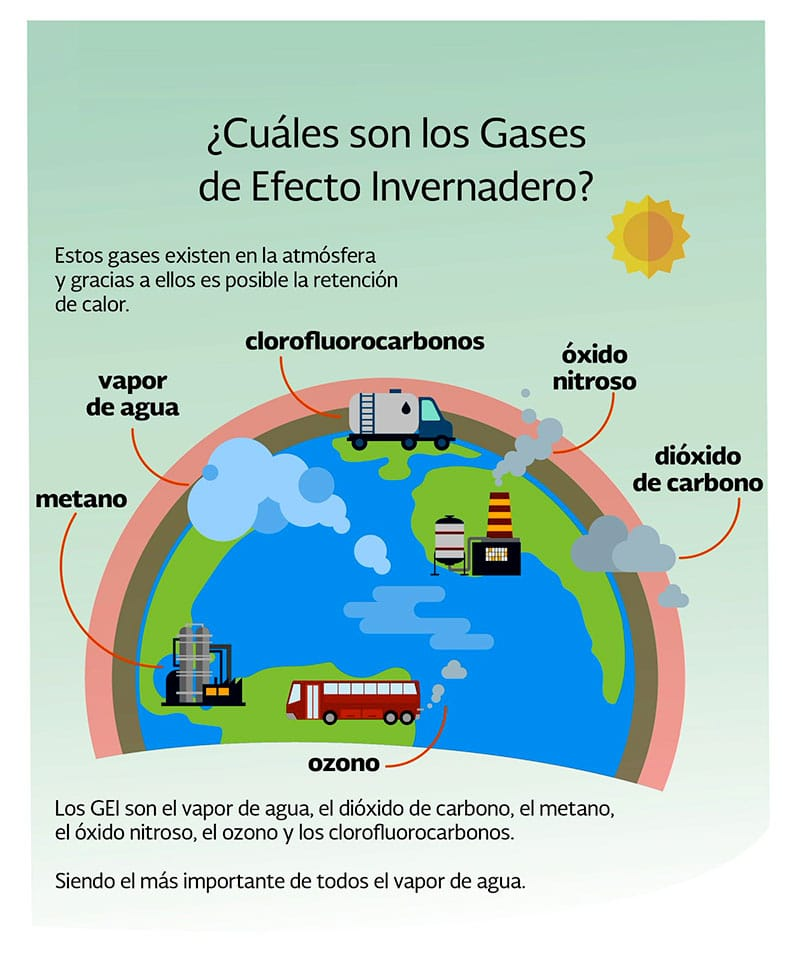

¿Qué es el Efecto invernadero?
El efecto invernadero es un proceso físico por el cual la radiación emitida por la superficie planetaria y recibida del Sol es absorbida por los gases de la atmósfera, causando un aumento de la temperatura y de la humedad.
El efecto invernadero es un fenómeno natural que posibilita la vida en la Tierra. Si los gases de la atmósfera no retuvieran el calor, la temperatura en el planeta sería 30 grados menor.
Sin embargo, en los últimos siglos la contaminación de dióxido de carbono ha provocado que más calor quede retenido en la atmósfera, causando un cambio climático a nivel mundial. Por eso, en este momento el efecto invernadero se ha convertido en un problema ecológico.
Efecto Invernadero Natural
Un invernadero es una construcción que permite entrar el calor del sol pero que, por la ausencia de ventilación, no lo deja salir. Los invernaderos se utilizan para cultivar vegetales que requieren altos niveles de temperatura y humedad.
La atmósfera terrestre produce este mismo efecto ya que permite que los rayos solares lleguen a la superficie terrestre y luego retiene parcialmente su energía, gracias a la capa que forman sus gases. Gracias a que la atmósfera funciona como un invernadero, en la superficie terrestre puede desarrollarse la vida que requiere cierta temperatura mínima para sobrevivir.
Sin embargo, cuando hablamos de efecto invernadero nos referimos al momento en que la cantidad de calor que recibe la atmósfera es superior a la cantidad de calor que logra dispersar al espacio exterior, produciendo un aumento progresivo de la temperatura.
Causas del Efecto Invernadero
El efecto invernadero no natural es causado por el exceso de dióxido de carbono en la atmósfera. El mismo se incrementó desde fines del siglo XVIII, debido al desarrollo industrial. Este incremento se debe al uso intensivo de combustibles fósiles como fuente de energía tanto en actividades industriales como en el transporte.
Otra de las causas es la deforestación, ya que los árboles se encargan de disminuir la cantidad de dióxido de carbono, y al perder grandes superficies de bosque este gas permanece más tiempo en la atmósfera.
Consecuencias del Efecto Invernadero
La consecuencia directa del incremento del efecto invernadero es el calentamiento global. A su vez, el calentamiento global provoca el deshielo de los polos, aumentando el nivel del mar y disminuyendo las reservas de agua potable para la humanidad.
Además, numerosas especies como los corales no pueden sobrevivir a un cambio de temperatura. La disminución de la biodiversidad tiene consecuencias imprevisibles en el equilibrio biológico del planeta.
El calentamiento global no sólo se manifiesta en un aumento de temperaturas sino también en fenómenos atmosféricos inesperados, como mayor cantidad de huracanes y precipitaciones anormales.
Ver ademas: Calentamiento Global
Gases del efecto invernadero
El principal gas que mantiene el efecto invernadero natural es el vapor de agua. En segundo lugar, el dióxido de carbono, a pesar de ser un gas que compone un mínimo porcentaje de la atmósfera (sólo un 0,035 %). Por eso, cualquier variación en la cantidad de dióxido de carbono en la atmósfera tiene un profundo impacto en el efecto invernadero, ya que pequeñas cantidades producen grandes efectos.
El dióxido de carbono en la atmósfera es de larga permanencia: el 50 % del mismo tarda 30 años en desaparecer, pero un 30 % tardará siglos es degradarse mientras que el 20 % restante permanecerá durante miles de años.
Los otros gases que intervienen en el efecto invernadero son el metano, el óxido nitroso, el ozono y los clorofluorocarbonos. Este último no es un gas naturalmente presente en la atmósfera, sino que es producto exclusivamente de la acción humana.
Cambios climáticos por el efecto invernadero

Tanto la radiación infrarroja de la superficie de la tierra como la energía solar que no se dispersa es absorbida por la atmósfera, la superficie terrestre, los seres vivos y los objetos, manteniendo un ciclo constante que es el efecto invernadero natural de nuestro planeta
La energía que es encuentra en la atmósfera causa los cambios climáticos naturales como el aumento o disminución de temperatura, los vientos y las precipitaciones
Por eso, mientras la entrada y salida de calor de la atmósfera se mantiene constante, los fenómenos meteorológicos son previsibles y estacionales. Sin embargo, cuando el efecto invernadero es excesivo y la temperatura atmosférica aumenta, se producen fenómenos imprevisibles, como la multiplicación de huracanes, tsunamis, precipitaciones excesivas, entre otros.
Acuerdos internacionales sobre el efecto invernadero
Diversos países del mundo firmaron acuerdo para luchar contra el cambio climático provocado por el efecto invernadero, en el marco de la Convención Marco de las Naciones Unidas sobre el Cambio Climático:
- Protocolo de Kioto: Firmado en 1997, introduce objetivos jurídicamente vinculantes para la reducción de emisiones de gases de efecto invernadero.
- Acuerdo de Paris: Su objetivo es fomentar el desarrollo sostenible, es decir, desarrollar las economías sin aumentar las emisiones de gases producidas por la industrialización
¿Cómo disminuir el efecto invernadero?

Para evitar la emisión de gases de efecto invernadero diversos países buscan reemplazar los combustibles fósiles con fuentes de energía limpia, como la energía solar, eólica o geotérmica.
Además, en todas las grandes ciudades del mundo se apunta disminuir la contaminación provocada por los medios de transporte, fomentando el uso del transporte público y de las bicicletas.